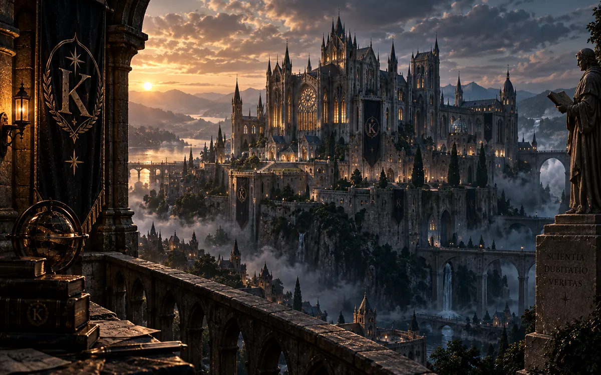

Pick a DJ, launch the party and watch the room come alive. A lighter public version of the nightclub idea — fast to open, easy to lose time in.
weirdflex.online
Small strange browser games, with more on the way. Pick your mood: warehouse euphoria, cheerful shiba chaos, a very questionable day in the life of a seagull, or a mystery where logic meets magic.
Pick a DJ, launch the party and watch the room come alive. A lighter public version of the nightclub idea — fast to open, easy to lose time in.

A bright endless runner with one determined dog and a growing collection of cities. Cute on the surface, surprisingly hard once the pace kicks in.

Glide above a beautiful city, switch lanes and make tiny terrible choices. Calm, slow and faintly ridiculous in the best possible way.

Enter a world where logic and magic live side by side. Explore mysterious cases, examine evidence, uncover contradictions and name the culprit.